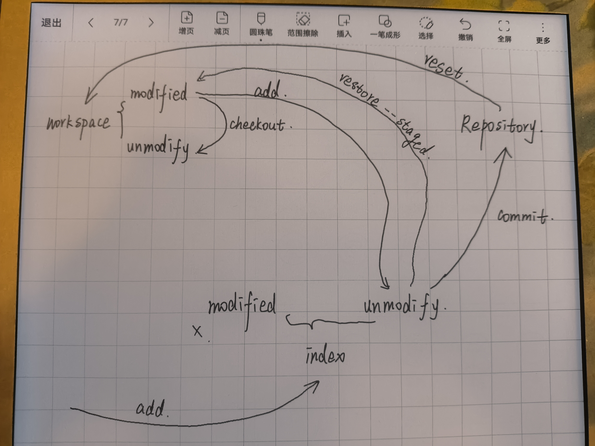
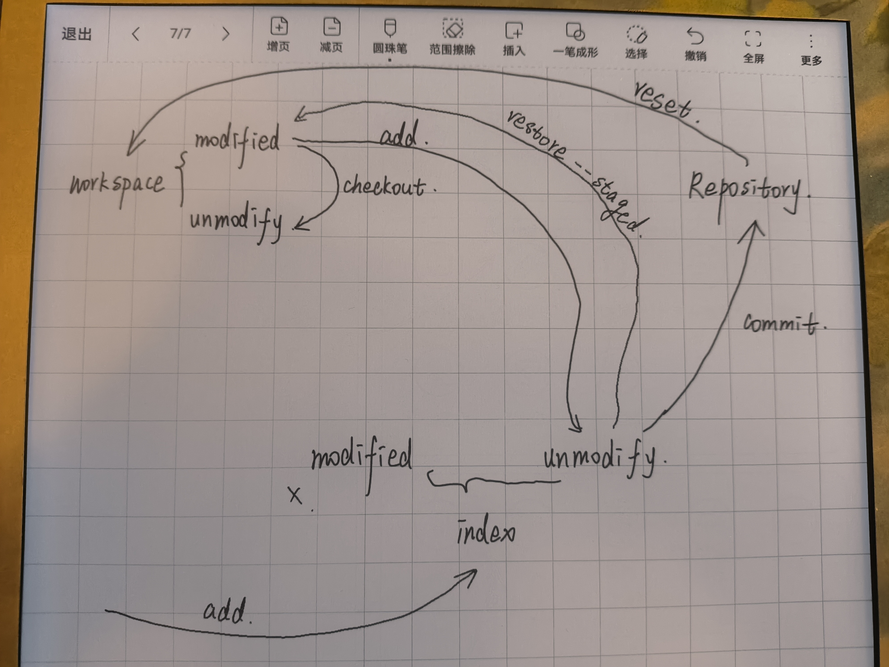

基本理论
Table of Contents
项目的三个分区
Git本地有三个工作区域：工作目录（Working Directory）、暂存区（Stage/Index）、资源库（Repository或Git Directory）。如果在加上远程的git仓库（Remote Directory）就可以分为四个工作区域。文件在这四个区域之间的转换关系如下:
- Workspace
- 工作区，就是你平时存放项目代码的地方；
- Index / Stage
- 暂存区，用于临时存放你的改动，事实上它只是一个文件，保存即将提交到文件列表信息；
- Repository
- 仓库区（或本地仓库），就是安全存放数据的位置，这里面有你提交到所有版本的数据。其中 HEAD 指向最新放入仓库的版本；
- Remote
- 远程仓库，托管代码的服务器，可以简单的认为是你项目组中的一台电脑用于远程数据交换；
本地的三个区域确切的说应该是 git 仓库中 HEAD 指向的版本:
- Directory
- 使用Git管理的一个目录，也就是一个仓库，包含我们的工作空间和Git的管理空间；
- WorkSpace
- 需要通过Git进行版本控制的目录和文件，这些目录和文件组成了工作空间；
- .git
- 存放Git管理信息的目录，初始化仓库的时候自动创建；
- Index/Stage
- 暂存区，或者叫待提交更新区，在提交进入repo之前，我们可以把所有的更新放在暂存区；
- Local Repo
- 本地仓库，一个存放在本地的版本库；HEAD会只是当前的开发分支（branch）；
- Stash
- 隐藏，是一个工作状态保存栈，用于保存/恢复WorkSpace中的临时状态；
工作流程
git 的工作流程一般是这样的：
- 在工作目录中添加、修改文件；
- 将需要进行版本管理的文件放入暂存区域；
- 将暂存区域的文件提交到 git 仓库。
因此，git 管理的文件有三种状态：已修改（modified），已暂存（staged），已提交（committed）
文件的四种状态
文件的四种状态
版本控制就是对文件的版本控制，要对文件进行修改、提交等操作，首先要知道文件当前在什么状态，不然可能会提交了现在还不想提交的文件，或者要提交的文件没提交上
文件的状态主要为 未追踪 (Untracked)和 已追踪 (Tracked)，已追踪状态包括 Unmodified、Modified、Staged
- Untracked
- 未跟踪, 此文件在文件夹中, 但并没有加入到 git 库, 不参与版本控制. 通过 git add 状态变为 Staged
- Staged
- 暂存状态. 执行 git commit 则将修改同步到库中, 这时库中的文件和本地文件又变为一致, 文件为 Unmodify 状态. 执行 git reset HEAD filename 取消暂存, 文件状态为 Modified
- Unmodify
- 文件已经入库, 未修改, 即版本库中的文件快照内容与文件夹中完全一致. 这种类型的文件有两种去处, 如果它被修改, 而变为 Modified 如果使用 git rm 移出版本库, 则成为 Untracked 文件
- Modified
- 文件已修改, 仅仅是修改, 并没有进行其他的操作. 这个文件也有两个去处, 通过 git add 可进入暂存 staged 状态, 使用 git checkout 则丢弃修改过, 返回到 unmodify 状态, 这个 git checkout 即从库中取出文件, 覆盖当前修改!
 


- Staged -> Untracked
- git clean -n <filename>
- Staged -> Unmodify
git commit -m <commit message>orgit reset HEAD <filename>- Modified -> Unmodify
git add <filename>orgit checkout <filename>- Unmodify -> Untracked
- git rm <filename>
- Untracked -> Staged
- git add <filename>
查看文件状态
上面说文件有 4 种状态，通过如下命令可以查看到文件的状态:
# 查看指定文件状态 git status [filename] # 查看所有文件状态 git status
.git文件夹内容
object(Object Database)[文件夹]
存放所有的 git 对象，详细原理参见：Git内部原理-Git对象
hooks[文件夹]
存放一些钩子(hooks)脚本，init后会自动生成一些示例钩子，以.sample结尾
提交过程(客户端)
- pre-commit
- 在提交前自动运行，如果钩子以非零值推出，Git将放弃本次提交，可以用no–verify绕过该过程；
- prepare-commit-msg
- 运行在启动提交信息编辑器之前，在创建默认消息之后，使你可以编辑提交者所看到的默认信息
- commit-msg
- 钩子接收一个参数，此参数即上文提到的，存有当前提交信息的临时文件的路径。 如果该钩子脚本以非零值退出，Git 将放弃提交，因此，可以用来在提交通过前验证项目状态或提交信息;
- post-commit
- 在整个提交过程完成后运行，一般用于通知。
其他(客户端)
- pre-rebase
- 调用在git rebase操作之前，返回非零值可以中止rebase操作；
- post-rewrite
- 会被可能造成替换提交记录的命令调用；
- post-checkout
- 在git checkout之后调用。你可以根据你的项目环境用它调整你的工作目录。其中包括放入大的二进制文件、自动生成文档或进行其他类似这样的操作
- post-merge
- 在git merge之后调用， 你可以用它恢复 Git 无法跟踪的工作区数据，比如权限数据。 这个钩子也可以用来验证某些在 Git 控制之外的文件是否存在，这样你就能在工作区改变时，把这些文件复制进来；
- pre-push
- 在git push运行期间，更新了远程引用但尚未传送对象时调用。你可以在推送开始之前，用它验证对引用的更新操作(一个非零的退出码将终止推送过程)。
接收过程(客户端)
- pre-receivew
- 在处理客户端的推送操作时，最先被调用，如果以非零值推出，所有推送内容不会被接受；
- update
- 与楼上类似，但是假设客户端同时推送多个分支，服务器端pre-receive主机运行一次，但是update会在每个被推送的分支都运行一次，如果update以非零值推出，只有失败的那个应用会被拒绝，其他会被更新；
- post-receive
- 在接收完成后被调用，可以用来更新其他系统服务或者通知用户
refs[文件夹]
- heads文件夹包含本地分支，remote文件夹为远程分支，tags文件夹包含了tag
- 保存当前最新一次提交的hash值
logs[文件夹]
保存所有更新的引用记录，文件存放方式类似于refs文件夹：
格式：上一次提交的hash值 | 当前提交的hash值 | 提交者名称 | 提交者邮箱 | 时间戳 时区 | 提交信息
info[文件夹]
包含一个exclude文件，存放一些信息
FETCH_HEAD[文件]
版本链接，指向目前从远端仓库取下来分支的末端版本
description[文件]
仓库的描述信息，一般提供给Git托管仓库系统使用
config[文件]
提供一些Git仓库的配置文件
index[文件]
暂存区，二进制文件
HEAD[文件]
映射到ref引用（在refs文件夹中），能够找到下一次commit的前一次的hash值，即当前指针指向的位置
ORIG_HEAD[文件]
HEAD指针的前一个状态，为hash值